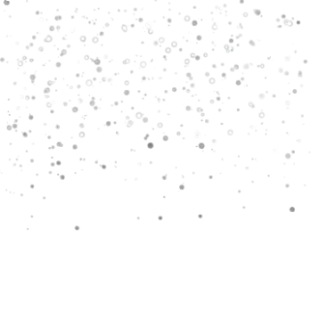
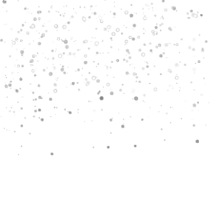

Bem-vindo à fase dos picos de neve!
 

Angry Birds Star Wars é um jogo de quebra-cabeça e o décimo título da série Angry Birds, lançado em 2012. Desenvolvido pela Rovio em parceria com a LucasArts, o jogo é um crossover entre a série de pássaros e a trilogia original de Star Wars.
Lançado em 8 de novembro de 2012 pela Rovio Entertainment em parceria com a Lucasfilm, e se tornou um dos crossovers mais marcantes da história dos jogos mobile. Ele uniu o universo divertido e explosivo dos Angry Birds com o mundo épico e lendário de Star Wars, criando uma combinação perfeita entre humor, aventura e nostalgia. O jogo manteve a jogabilidade clássica da franquia, mas incorporou elementos, cenários e personagens inspirados diretamente na saga criada por George Lucas. A história de Angry Birds Star Wars é uma recriação divertida da trilogia original de Star Wars, com os pássaros assumindo os papéis dos heróis e os porcos representando o Império Galáctico. O jogo começa com o planeta Tatooine, onde o pássaro vermelho, Red Skywalker, representa Luke Skywalker. Assim como no filme, ele descobre o poder da Força e parte em uma jornada para derrotar os porcos do lado sombrio, liderados pelo temido Darth Vader, aqui retratado como o Pig Vader. Ao longo da história, os jogadores visitam diversos planetas e locais famosos do universo Star Wars, como Hoth, Cloud City, Dagobah, e até a Estrela da Morte, enfrentando desafios e inimigos em cada fase. Os pássaros ganham habilidades especiais inspiradas em seus personagens: Red Skywalker pode usar um sabre de luz, Chuck se transforma em Han Solo, disparando tiros de laser, Bomb se torna Obi-Wan Kenobi, capaz de usar a Força para empurrar objetos, e outros pássaros assumem papéis icônicos como Chewbacca, Leia Organa e C-3PO. Cada um tem poderes únicos que ajudam o jogador a derrotar os porcos imperiais e derrubar suas fortalezas galácticas. O jogo também trouxe grandes inovações na jogabilidade. Misturando a física tradicional dos Angry Birds com ambientes espaciais parecidos com os de Angry Birds Space, as fases incluíam gravidade variável e estruturas flutuantes, exigindo estratégias diferentes e mais precisão nos lançamentos. Além disso, o visual do jogo foi completamente reformulado, com gráficos inspirados na estética dos filmes e uma trilha sonora que adaptava o tema clássico de Star Wars ao estilo dos Angry Birds, criando uma experiência divertida e nostálgica ao mesmo tempo. Angry Birds Star Wars foi um sucesso imediato, conquistando fãs tanto dos jogos quanto dos filmes. O título foi elogiado por sua fidelidade à história original, pelo humor característico da franquia e pelas referências criativas aos momentos mais marcantes da saga, como o treinamento Jedi, a batalha de Hoth e o confronto final com Darth Vader. O jogo foi lançado para iOS, Android, PC, Mac e consoles, atingindo milhões de downloads logo nas primeiras semanas. O sucesso foi tão grande que, no ano seguinte, a Rovio lançou Angry Birds Star Wars II, baseado na trilogia prequela dos filmes. Essa sequência expandiu ainda mais o universo, permitindo que o jogador escolhesse entre o Lado dos Pássaros Jedi ou o Lado dos Porcos Sith, adicionando dezenas de novos personagens jogáveis e fases mais complexas. Mesmo anos depois, Angry Birds Star Wars continua sendo lembrado como uma das versões mais criativas e icônicas da série. Ele mostrou como a Rovio conseguia unir seu estilo simples e divertido com uma das maiores franquias da cultura pop, criando uma experiência que agradou tanto crianças quanto adultos. Com seu humor, referências e jogabilidade envolvente, Angry Birds Star Wars se consagrou como um dos maiores sucessos da história dos Angry Birds e um verdadeiro clássico entre os jogos mobile.